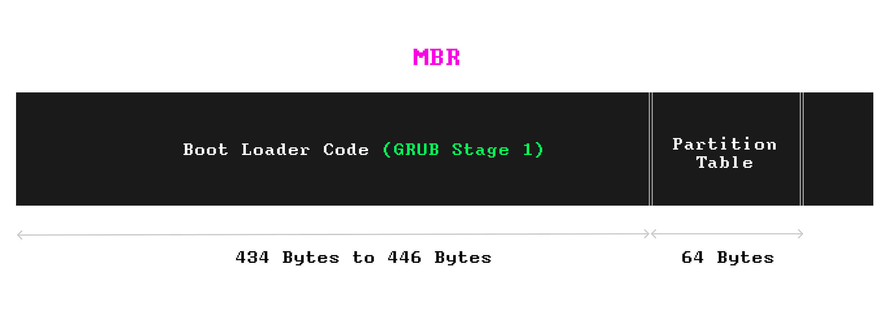
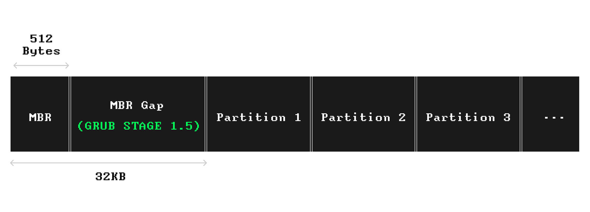
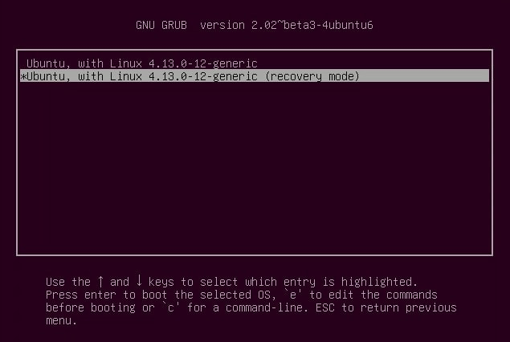
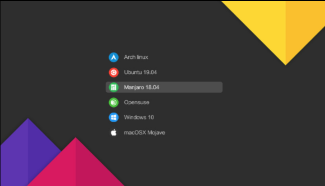
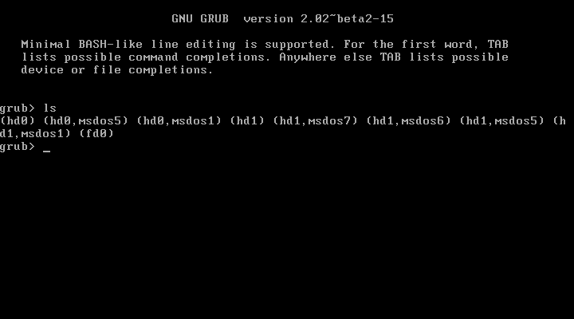

I have been wondering how operating system boots since the first time I installed my ArchLinux: What happened when I pressed the power on button? Why my computer knows where the system is installed? Why I need to run grub2-install and grub2-mkconfig from a rescue live CD when my Archlinux failed to boot after an update?
It just so happens that I’m working on a requirement of Bare Metal Recovery these days. Not only do we have to restore volumes sector by sector, but also “starts up recovery” is required. We need to mount origin volumes to a Linux live CD media and run commands like grub2-install and grub2-mkconfig to fix the start up items of the origin system, otherwise the system won’t boot after BMR performed. The two commands works on most cases, however, sometimes grub2-install will fail, sometimes grub2-mkconfig will succeed but origin system still can’t boot normally after restart and only got a GRUB shell prompted instead. These strange problems on specified distro force me to delve into the booting procedure of Linux, to figure out what is GRUB, and what did these commands actually do to the disk.
I will make a brief summary in this article of what I have learned these days about the os booting process, including BIOS/UEFI booting, GRUB bootloader, etc. I hope this blog might help for those who are also a newbie to such realm.
BIOS booting & UEFI booting
I seached from wikipedia and learned that modern computers usually have two ways for booting an operating system: BIOS (Basic Input/Output System) and UEFI (Unified Extensive Firmware Interface). They are both firmware interfaces that are responsible for initializing hardware components during the booting process of a computer. However, they differ in several aspects:
| Aspect/Type | BIOS | UEFI |
|---|---|---|
| Legacy vs Modern Technology | BIOS is the older technology, dating back to the 1970s. It has been the standard firmware interface for PCs for many years. | UEFI is a more modern replacement for BIOS. It was developed to overcome limitations of BIOS and to provide more features and capabilities. |
| Boot Process | BIOS follows a traditional boot process where it looks for the Master Boot Record (MBR) on the boot device and executes the boot loader stored in the MBR. | UEFI, on the other hand, follows a more flexible and modular boot process. It uses GUID Partition Table (GPT) instead of MBR, and it can directly execute EFI applications stored in the EFI System Partition (ESP). UEFI also supports secure boot, which ensures that only trusted software is loaded during the boot process. |
| Compatibility | BIOS has limited support for modern hardware features and larger storage devices. It also has compatibility issues with some advanced features like Secure Boot | UEFI provides better support for modern hardware, larger storage devices, and advanced features like Secure Boot. It also supports backward compatibility with legacy BIOS systems through a compatibility support module (CSM). |
| User Interface | BIOS typically has a text-based user interface accessed by pressing a key (e.g., Del, F2) during system startup. | UEFI often provides a graphical user interface (GUI) with mouse support for configuration and settings, making it more user-friendly. |
| Size and Extensibility | BIOS has a limited firmware size and functionality, making it less extensible. | UEFI has a larger firmware size and is more extensible, allowing for more features and capabilities to be added. |
Bootloaders
In summary, while both BIOS and UEFI serve the same purpose of initializing hardware during the boot process, UEFI offers several advantages over BIOS, including support for modern hardware, flexibility, security features like Secure Boot, and a more user-friendly interface.
When computer powers on, bothing BIOS booting and UEFI booting won’t directly search where the operating system is, they will look for the “bootloaders” instead. A bootloader is a small program that resides in the boot sector of a storage device, such as a hard drive, solid-state drive (SSD), or a USB drive. Its primary function is to load and execute the operating system kernel to start the boot process of a computer or device.
Here are some common bootloaders used in various operating systems:
- GRUB (GRand Unified Bootloader): GRUB is a widely used bootloader for Linux-based operating systems. It supports multiple operating systems and provides a boot menu for selecting the desired operating system or kernel.
- GRUB2: an updated version of GRUB with improved features and functionalities
- LILO (LInux LOader): the earliest bootloaders used for Linux systems. It has been largely replaced by GRUB but is still used in some older systems.
- Syslinux: a lightweight bootloader that is commonly used for booting Linux distributions from removable media, such as USB drives or CDs.
- Windows Boot Manager (Bootmgr): the bootloader used in Windows Vista/7/8/10. It is responsible for loading the Windows kernel and booting the Windows operating system.
- NTLDR (NT Loader): used in Windows NT-based operating systems, including Windows NT/2000/XP. It has been replaced by Bootmgr in newer versions of Windows.
- EFI/UEFI Boot Manager: UEFI includes a built-in boot manager that replaces traditional BIOS-based bootloaders. It is responsible for loading and executing EFI applications, including bootloaders for different operating systems.
GRUB, as mentioned earlier, is well-known for Linux users. It is responsible for managing the boot process of a computer, allowing users to select which operating system to boot into when multiple operating systems are installed on the same machine at one time. Since the fact that nearly all modern Linux operating system using GRUB as the default bootloader, I will only talk about the GRUB2 in the later part, all ‘bootloader’ or ‘GRUB’ mentioned later can be viewed as ‘GRUB2’.
The hardware initialization process is done by hardware maunufactor so I won’t pay much attention to this part. So firstly we need to figure out how GRUB is located and loaded. This process on BIOS mode differs from that on UEFI mode, so we have to discuss it separately.
How BIOS load GRUB
If a computer use BIOS bootstrap, the BIOS will check the bootstrap signature at the MBR sector (the first sector, 512B) of the disk.
read this wiki for more information about MBR : https://en.wikipedia.org/wiki/Master_boot_record
If the disk contains valid bootstrap signature, the bootstrap instruction written at the first sector will be executed. This stage is called GRUB Stage 1, the instruction size is limited to several hundred bytes so it’s designed only aim to load the instruction of next stage.

The area where the core instruction of GRUB (core.img) resides is known as the “embedding area” or “post-MBR gap,” is usually unpartitioned space on the disk between MBR sector and the first partition. This part is known as GRUB stage 1.5 or GRUB stage 2. This is the part that need to be loaded by GRUB Stage 1.

the
core.imgis written directly to the disk using low-level disk writing utilities such asdd.
From the sfdisk -d command we can see, on most modern Linux distro, the “embedding area” is reserved from 1 sector to 2047 sector, taking space about 2048 * 512B = 1MiB:
➜ sudo sfdisk -d /dev/sda |
Now, let’s go back to the question ‘what does grub2-install do to the disk?’. When we using grub2-install -target=i386-pc /dev/sda command to install GRUB, we are installing GRUB in BIOS mode. This opeation makes two modification to the disk:
- Dump GRUB core image (GRUB Stage 1.5/2) to “post-MBR gap” of
/dev/sda. - Write the necessary boot code and configuration data (GRUB Stage 1) to the MBR of
/dev/sda.
However, when comes to UEFI mode, all things get a little bit different.
How UEFI load GRUB
If a host boots on UEFI mode, after the hardware check is done, the UEFI firmware reads specific files from the EFI System Partition (ESP) during the boot process. The primary file it looks for is:
- Boot Loader: The UEFI firmware typically reads the boot loader file specified in the boot configuration data (BCD) or in the firmware’s boot manager settings. The boot loader file is usually located at
/EFI/BOOT/bootx64.efifor 64-bit systems or/EFI/BOOT/bootia32.efifor 32-bit systems. This file is responsible for initiating the boot process and loading the operating system kernel.
Additionally, the UEFI firmware may read other files from the ESP depending on the system configuration and boot options. These files may include:
- Boot Manager Configuration: Configuration files related to the UEFI boot manager, such as
/EFI/Microsoft/Boot/BCDor/EFI/Boot/BCD. - Operating System Boot Loader: The boot loader for the specific operating system installed on the system, located at paths like
/EFI/<Operating_System>/bootx64.efi.
The EFI System Partition (ESP) is an independent partition on a disk, typically formatted with the FAT32 file system. It’s used by computers adhering to the UEFI specification for storing boot loader and other system files required for the boot process. The ESP is usually mounted at /boot/efi in Linux systems and contains files necessary for the boot process, such as boot loaders, boot manager configurations, and firmware executables. For example, structure of an ESP partition of Ubuntu mounted at /boot/efi may looks like :├── EFI
│ ├── ubuntu
│ │ ├── bootx64.efi
│ │ ├── fonts
│ │ │ ├── TRANS.TBL
│ │ │ └── unicode.pf2
│ │ ├── grub.cfg
│ │ ├── grubx64.efi
│ │ ├── mmx64.efi
│ │ └── TRANS.TBL
│ └── TRANS.TBL
In this case, UEFI booting process may looks like this:
- UEFI firmware search all FAT32 partitions on disks partitioned by GPT and find a valid ESP
- UEFI firmware found the bootloader
/EFI/ubuntu/bootx64.efiin this ESP and load it into memory - The UEFI bootloader
/EFI/ubuntu/bootx64.efiload GRUB executable/EFI/ubuntu/grubx64.efi
the grub2-install command to install GRUB in UEFI mode should be like grub2-install --target=x86_64-efi --efi-directory=/boot/efi. This command installs the GRUB bootloader onto the EFI System Partition (ESP) of your disk. You need to sepecify a directory, or say ESP mount point, as a target to store the UEFI loader files rather than provide a block device like /dev/sda.
According to the UEFI specification, a disk should only contain one EFI System Partition (ESP). The ESP is a unique partition designated for storing boot loaders and other essential boot files for the UEFI boot process. Having multiple ESPs on a single disk could lead to confusion for the UEFI firmware and the boot manager, as they rely on a single ESP to locate and load the necessary boot files. Therefore, it’s recommended to have only one ESP per disk when using UEFI booting. However, a PC may allowed to contain multiple ESP partition by having multiple disks each containing a valid ESP, the firmware determines which disk to boot from based on the boot order settings configured in the UEFI firmware.
How GRUB boot Linux
When GRUB is loaded by BIOS/UEFI firmware, it takes the control and we don’t need to care the difference between BIOS booting and UEFI booting from now on.
GRUB can provide both a text-based menu and a GUI based, prettfied UI for user to select which boot option to use:


GRUB shell
when GRUB menu is shown, you can press ‘e’ to edit the boot command of the current menu entry, e.g, modify the kernel argument or the kernel image path in order to switch another kernel. You can also press ‘c’ to enter the GRUB shell : this shell always prompt when there’s no valid boot entry.(You may also encounter such case if your system failed to boot after an update). The GRUB shell provides some basic commands that you may use to rescue your system without reinstalling:
ls: list the block devices, e.g, disks, that can be recognized by GRUB. Once GRUB has the required modules loaded, it can recognize far more than the disks. If GRUB loaded thexfsmodule, it can detect and list XFS partitions. If GRUB loaded thelvmmodule, it can even recognize LVM volume! These can all be done without kernel loaded! That’s why GRUB can even boot OS from btrfs or xfs filesystem managed by LVM.lscommand can also list files and directories inside the partition if it’s filesystem is known to GRUB, so it’s really useful when we want to check if the files needed for booting is missing when boot failed.insmod: load the specified module, e.g.insmod xfs. GRUB won’t load all modules into memory when started, some optional external modules may be need to load from disk explictly after core modules has been loaded.set: check and set the GRUB environment variables. GRUB has many variables defined, such asroot(to control the current directory and partitions/volumes),linux(to determine which linux kernel to use) andinitrd(sepecify which initramfs to use).

For more GRUB commands : https://www.gnu.org/software/grub/manual/legacy/Command_002dline-and-menu-entry-commands.html
grub2.conf
Once the GRUB menu or GRUB shell shown, it indicates that the bootloader is loaded successfully. So next step is to boot the operating system, and that’s what the GRUB is responsible to do. However, how it knows what to do next? e.g. where to find the linux kernel to load into memory? Which system to boot if there’s multiple system existing on same machine? It’s time to introduce grub.cfg, the GRUB configuation file. It contains the settings and options used by GRUB to display the boot menu and manage the boot process. When GRUB is loaded into memory, it will perform initialization by following the ‘scripts’ in grub.cfg.
GRUB will always search grub.cfg in directory set by variable prefix. For example, if you type set in your GRUB shell and get the output: prefix=(hd0, gpt1)/EFI/ubuntu, it means GRUB will use the /EFI/ubuntu/grub.cfg file from the first GPT partition of disk hd0. If no GRUB menu is not shown but GRUB shell got prompted instead, this usually indicate GRUB cannot find any valid boot menu entry to list, such issue is usually caused by missing grub.cfg file. Depending on your Linux distribution, the grub.cfg file might be located in different position such as /boot/grub/grub.cfg or /boot/efi/EFI/<distro>/grub.cfg. Find the correct path for your system. If you need to confirm that the boot failure is caused by missing grub.cfg file, you can press ‘c’ to open GRUB shell to check if your grub.cfg exists in the directory marked by prefix.
Here is a simple grub.cfg example providing two boot entries, one normal mode and one recovery mode:
# /boot/grub2/grub.cfg |
The grub.cfg can be viewed as a script file, which should be interpreted and executed from up to down. First twos line of instruction: set default=0 and set timeout=5 define two GRUB environment variables, telling GRUB to use first menu entry as default, and set 5 seconds as the timeout for the boot menu. insmod xfs load the xfs module for the purpose to make GRUB able to read files from xfs partition. These syntax in grub.cfg is the same as what we might use in GRUB shell, that’s why I say this configuration file can be viewed as a ‘script’ like bash.
We can notice that there’re two menuentry blocks representing two menu entry for user to choose at boot time, each entry have environment variable linux and initrd, specifying the path of linux kernel and the initramfs to use. The arguments followed by linux kernel path are passed to kernel when booting, that can be read from /proc/cmdline after Linux kernel loaded. If you have other systems, e.g, Windows or OSX installed on other partitions, you can add new menuentry to configure them, that’s how choosing which os to boot from multiple systems is implemented.
This grub.cfg set root environment variable to (hd0, gpt2), means that GRUB will use the second GPT partition of disk hd0 as ‘root’ partition. Since root is defined, hence it’s no need to explictlty specify disk or partition prefix to locate a file path. The kernel path /boot/vmlinuz-4.13.0-12-generic is implictly defined as (hd0, gpt2)/boot/vmlinuz-4.13.0-12-generic. To avoid failure of unable to locate the file path cause by change of the disks, it’s more recommend to use partition label or filesystem UUID to define the root:
# use uuid to mark the root partition |
In many Linux distributions, including Ubuntu, the /boot/grub2/grub.cfg file is generated automatically by scripts during system updates or kernel installations. These scripts may gather information about the system’s configuration and generate the appropriate menu entries and kernel parameters based on that information. It’s important to note that manually editing the /boot/grub2/grub.cfg file is generally not recommended, as changes made to this file may be overwritten during system updates or kernel installations. Instead, configuration changes should be made in the appropriate configuration files in /etc/grub.d/ or by editing the /etc/default/grub file and then regenerating the grub.cfg file using the grub-mkconfig command.
If all GRUB environment variables are configured normally, the kernel will be loaded into memory and GRUB will pass the control to Linux kernel. So, at this time, just forget GRUB, it’s time for Linux to show up!
How Linux start
As mentioned in the grub.cfg above, vmlinuz and initrd are essential components of the Linux boot process, each serving a distinct role:
vmlinuz (Kernel Image):
The vmlinuz file is the compressed Linux kernel image.
It contains the core functionality of the Linux operating system, including device drivers, memory management, process management, and system calls.
During the boot process, GRUB loads the vmlinuz kernel image into memory and hands over control to it.
The kernel then initializes the hardware, mounts the root filesystem, and starts the init process (usually/sbin/init).initrd (Initial RAM Disk):
The initrd is an initial RAM disk image used by the kernel during the boot process.
It contains a minimal filesystem with essential tools and drivers needed to mount the actual root filesystem.
The initrd is loaded into memory by the bootloader along with the kernel (vmlinuz) before the actual root filesystem is mounted.
Once the initrd is loaded, the kernel executes the init program within the initrd, which is typically a small script responsible for locating and mounting the real root filesystem.
The initrd is particularly useful in situations where the kernel does not have built-in support for the storage controller or filesystem needed to access the root filesystem. It provides a temporary environment to load the necessary drivers and modules to access the root filesystem.
In summary, vmlinuz is the compressed Linux kernel image containing the core OS functionality, while initrd is an initial RAM disk image used by the kernel during boot to facilitate the mounting of the real root filesystem. Both are crucial components of the Linux boot process, working together to initialize the system and load the operating system into memory.
let’s go backup to one of the menu entry defined in grub.cfg:# grub.cfg
# ....
menuentry "Ubuntu, with Linux, with Linux 4.13.0-12-generic" {
linux /boot/vmlinuz-4.13.0-12-generic root=UUID=097b1995-9ded-418b-a62f-ed1342f82cd1 ro quiet splash
initrd /boot/initrd.img-4.13.0-12-generic
}
root=UUID=097b1995-9ded-418b-a62f-ed1342f82cd1 specified the root filesystem that need to be mounted later for the kernel, that’s where the ‘Linux System’ really resides. If we check the /etc/fstab:$ cat /etc/fstab
# <file system> <mount point> <type> <options> <dump> <fsck>
UUID=E46E-7C86 /boot/efi vfat defaults 0 2
UUID=097b1995-9ded-418b-a62f-ed1342f82cd1 / ext4 defaults,x-systemd.growfs 0 1
We may find UUID=097b1995-9ded-418b-a62f-ed1342f82cd1 is exactly the root filesystem! If root filesystem is managed by LVM and it’s device path is /dev/ubuntu/root, it’s ok to replace root=UUID=097b1995-9ded-418b-a62f-ed1342f82cd1 to root=/dev/ubuntu/root.
Here is the typical Linux boot process after GRUB load the kernel:
Linux Kernel Initialization:
- Once the bootloader hands over control to the Linux kernel, the kernel begins its initialization process.
- The kernel performs hardware detection and initialization, including the CPU, memory, storage devices, and other peripherals.
- It sets up the initial system environment, establishes the root filesystem, and starts the init process.
Init Process:
- The init process is the first user-space process started by the kernel and has process ID (PID) 1.
- Depending on the Linux distribution and init system (SysVinit, systemd, etc.), the init process may perform various tasks, including system initialization, service startup, and configuration management.
User-Space Initialization:
- After the init process completes its tasks, the system transitions into user-space.
- User-space initialization involves starting essential system services, daemons, and user applications specified in the runlevel or systemd targets.
Login Manager or Console Login:
- If a graphical desktop environment is configured, a login manager (such as GDM, LightDM, or SDDM) presents a login screen where users can authenticate and start their graphical session.
- Alternatively, on systems without a graphical environment or in multi-user mode, the user may be presented with a console login prompt.
User Session:
- Once logged in, the user gains access to the desktop environment or command-line interface (CLI) and can start using the system to perform various tasks.
Throughout the boot process, various configuration files, scripts, and system utilities are executed to configure and initialize the system, ensuring a smooth transition from the initial hardware initialization to a fully functional Linux environment.
At last, let me summarize the complete Linux system booting process into a timeline to describe what happens when your press down the power button:
timeline
title Linux System Boot Process
Hardware Initialization
: [Power On] When you turn on your computer, the BIOS (or UEFI firmware) performs initial hardware checks and starts the boot process.
: [BIOS/UEFI Initialization] The BIOS or UEFI firmware initializes hardware components such as CPU, memory, and storage devices.
: [Boot Device Selection] The BIOS or UEFI firmware locates and loads the boot loader from the boot device. This could be a hard drive, solid-state drive, or other storage media.
GRUB Stage
: [GRUB Stage 1] The first stage of GRUB is installed in the Master Boot Record (MBR) or the boot sector of the boot device. Its primary role is to load the next stage of GRUB.
: [GRUB Stage 1.5/Stage 2] Depending on the configuration, GRUB may have an intermediate stage (Stage 1.5) installed between Stage 1 and Stage 2. Stage 2 is the main part of GRUB responsible for loading the operating system.
: [GRUB Configuration] GRUB reads its configuration file (usually grub.cfg) to determine which operating systems are installed and how to boot them. This file contains information about kernel locations, boot parameters, and other options.
: [Loading Linux Kernel] Based on the configuration, GRUB loads the Linux kernel (vmlinuz) into memory. It may also load an initial RAM disk (initrd or initramfs) if necessary.
Kernel Stage
: [Kernel Initialization] The Linux kernel starts executing and initializes essential system components such as memory management, device drivers, and the root file system.
User Space Stage
: [Init Process] The kernel starts the init process, which is typically the first user-space process. The init process is responsible for starting system services and initializing the user environment.
: [User Space Initialization] Once the init process completes its tasks, the system is fully initialized, and the user can interact with the operating system through the shell or a graphical interface.